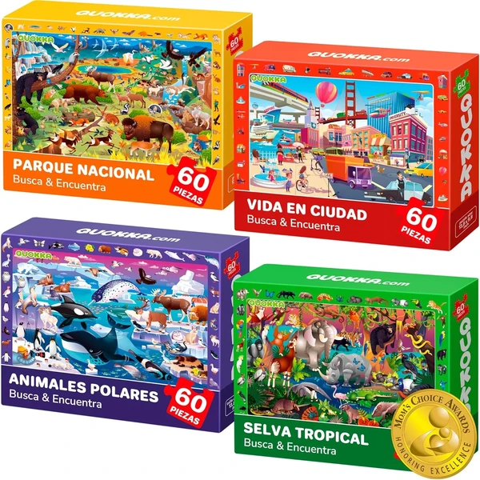

Puzzle Madera Magnética con Pizarra
Un rompecabezas magnético de madera con 14 animales de expresiones distintas y una pizarra de doble cara para dibujar con tiza o lápiz. Combina montaje de piezas con creatividad libre en la parte trasera.
⭐ ¿Por qué nos gusta?
- ✔ 14 animales con expresiones distintas y magnéticos.
- ✔ Pizarra de doble cara para dibujar.
- ✔ Incluye tizas, lápiz y borrador.
💬 Lo que más destacan las familias
Muchos padres coinciden en que la doble función de puzzle y pizarra alarga mucho el tiempo de juego frente a un puzzle normal. Las expresiones variadas de los animales también generan bastante curiosidad e imaginación.
Ver en Amazon

Ravensburger Puzzles Pokémon Pack de 2
Dos puzzles de 24 piezas con personajes Pokémon, con la tecnología Soft-Click de Ravensburger para un encaje perfecto. Incluye póster explicativo para guiar el montaje de cada uno.
⭐ ¿Por qué nos gusta?
- ✔ Dos puzzles de 24 piezas incluidos.
- ✔ Encaje preciso gracias a Soft-Click.
- ✔ Incluye póster de referencia para montarlos.
💬 Lo que más destacan las familias
Entre los comentarios más habituales aparece lo bien que funciona como primer contacto con puzzles de esta marca, gracias al encaje preciso de las piezas. Los personajes Pokémon despiertan bastante motivación para completarlos.
Ver en Amazon

Clementoni Patrulla Canina 4 en 1
Un pack de 4 puzzles de dificultad creciente (12, 16, 20 y 24 piezas) con los personajes de la Patrulla Canina. Pensado para ir avanzando paso a paso mientras se desarrolla la capacidad de observación.
⭐ ¿Por qué nos gusta?
- ✔ 4 puzzles con dificultad progresiva.
- ✔ Personajes muy populares de la Patrulla Canina.
- ✔ Se pueden montar y desmontar varias veces.
💬 Lo que más destacan las familias
Se repite bastante el comentario de que el formato progresivo funciona muy bien para ir subiendo de nivel sin frustraciones. Los personajes de la Patrulla Canina resultan un aliciente extra para completarlos todos.
Ver en Amazon

Goula Puzzle XXL Descubre Animales
Un puzzle de 25 piezas grandes con animales de tierra y mar, que incluye elementos escondidos y dos lentes ópticas para descubrirlos. Combina montaje con un pequeño juego de observación.
⭐ ¿Por qué nos gusta?
- ✔ 25 piezas grandes, fáciles de manejar.
- ✔ Incluye lentes ópticas para buscar detalles escondidos.
- ✔ Desarrolla coordinación ojo-mano y visión espacial.
💬 Lo que más destacan las familias
Lo que más suele gustar es el añadido de las lentes ópticas para buscar los elementos escondidos, algo distinto a un puzzle normal. El tamaño grande de las piezas también se valora para esta edad.
Ver en Amazon

QUOKKA Puzzle de Animales
Un pack de 4 puzzles de 60 piezas cada uno con animales polares, de parques nacionales y de bosque tropical. Colores vivos y un juego de buscar y encontrar dentro de cada escena.
⭐ ¿Por qué nos gusta?
- ✔ 4 puzzles distintos de 60 piezas cada uno.
- ✔ Temáticas variadas: polar, selva y parques.
- ✔ Colores vivos y diseño muy atractivo.
💬 Lo que más destacan las familias
Una característica muy mencionada es la variedad de escenarios distintos, que evita que el juego se haga repetitivo. El juego de buscar y encontrar dentro de cada puzzle añade un aliciente extra.
Ver en Amazon

Educa Set de Puzzles Bluey
Un set de 4 puzzles progresivos (12, 16, 20 y 25 piezas) con los personajes de Bluey, presentados en una maleta para guardarlos con facilidad. Piezas grandes fabricadas con tintas vegetales.
⭐ ¿Por qué nos gusta?
- ✔ 4 puzzles con dificultad progresiva.
- ✔ Personajes de Bluey, muy populares entre los peques.
- ✔ Viene en maleta práctica para guardar y transportar.
💬 Lo que más destacan las familias
No es raro encontrar comentarios sobre lo práctico que resulta guardar los 4 puzzles en la misma maleta, sin piezas sueltas. Los fans de Bluey reciben este set con mucho entusiasmo.
Ver en Amazon

BONNYCO Puzzle XXL de la Selva
Un puzzle gigante de suelo de 48 piezas que forma un paisaje con animales de la selva como el león, la jirafa o el elefante. Incluye hoja modelo como guía y un asa para transportarlo fácilmente.
⭐ ¿Por qué nos gusta?
- ✔ Puzzle gigante de suelo, 92 x 62 cm montado.
- ✔ Incluye hoja modelo como guía visual.
- ✔ Asa para transportar y guardar las piezas.
💬 Lo que más destacan las familias
Entre los comentarios más habituales aparece lo bien que funciona para jugar en grupo, gracias al gran tamaño una vez montado. La hoja modelo también se valora porque facilita completarlo sin ayuda constante.
Ver en Amazon